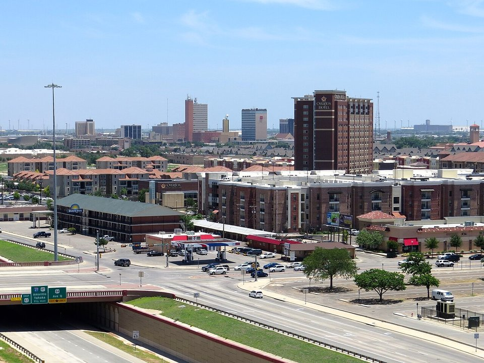

Lubbock · Boutique hotel
Cotton Court Hotel
A modern motor-court hotel with a firepit courtyard.
Official details for Cotton Court HotelGliders, Buddy Holly and High Plains wine.
Lubbock is the big city of the Texas High Plains, home to Texas Tech, Buddy Holly and most of the grapes in Texas wine. Pilots should start at the Silent Wings Museum, on the site of the airfield where thousands of World War II glider pilots trained. Land at Lubbock International, stay at the Cotton Court Hotel, see the Buddy Holly Center and the American Windmill Museum, taste at McPherson Cellars and Llano Estacado, and eat brisket at Evie Mae’s.

Time illustration: direct distance at 150 KTAS plus 15 minutes for departure and arrival, matching the discovery page. Use ForeFlight for your actual flight plan.
KLBB, Lubbock Preston Smith International, is a towered Class C airport at 3,282 feet with an 11,500-foot main runway, about 15 minutes from downtown.
Lubbock Preston Smith International Airport, Lubbock, TX
Class C airspace with airline and military traffic; contact approach early. Field elevation is over 3,000 feet; compute performance on hot days. No live fuel price is shown.
West Texas flying: strong spring winds and blowing dust, severe spring storms, hot summer afternoons with high density altitude at 3,300 feet, and long distances between airports. About 1140 nm from Myrtle Beach: a long cross-country day with two fuel stops. Plan four or more nights, or break the trip with an overnight on the way.
Rates and availability need travel dates. Texas Tech football weekends book early.
A modern motor-court hotel with a firepit courtyard.
Official details for Cotton Court HotelA full-service hotel next to campus.
Official details for Overton Hotel & Conference CenterHotels in Lubbock.
Visit Lubbock for More places to stayPrices and availability for your dates, through our partner Stay22. This is an affiliate link: we may earn a commission at no cost to you. The picks above are never paid.
Reserve weekend dinners.
Some of the best brisket in Texas, in nearby Wolfforth.
Official details for Evie Mae’s Pit BarbequeSeasonal cooking in a renovated downtown building.
Official details for The West TableSpanish-inspired tapas and wine.
Official details for La Diosa CellarsSteaks and barbecue on the edge of town.
Official details for Cagle SteaksRestaurants in Lubbock.
Visit Lubbock for More restaurantsMost museums close on Mondays.
The story of WWII glider pilots, on the old South Plains Army Airfield.
City of LubbockThis prototype links to the local visitor site. It does not yet match events to your travel dates.
Grape harvest on the High Plains.
Llano Estacado for HarvestTexas Tech home games.
Visit Lubbock for Football seasonBuddy Holly’s hometown music scene.
Visit Lubbock for Live musicCheck the local calendar when choosing a weekend, and confirm dates and tickets with the organizer.
A sample Lubbock weekend. This is a long flight; plan four or more nights. No bookings or availability confirmed.
Land at KLBB mid-morning.
Silent Wings Museum, then barbecue.
A short walk, then back to the airport.
Land at KLBB, subject to weather and your actual flight plan.
Silent Wings Museum.
Dinner at The West Table.
Buddy Holly Center and the Depot District.
American Windmill Museum and a winery.
Tapas at La Diosa.
Brisket at Evie Mae’s.
Compute takeoff performance at 3,300 feet and allow time at the FBO.
West Texas winds pick up in the afternoon; leave early.
Buddy Holly Center.
Explore.
Dinner in town.
These details make the difference between an appealing list and a usable getaway.
Hotel and car.
About 1,140 nm from Myrtle Beach: plan four or more nights.
Spring winds are strong and gusty.
April to May and September to October.
Research-based selections, not personal-visit endorsements. Researched November 1, 2026. Confirm hours, prices and availability directly with each place before booking. Spotted something out of date, or have a favorite we missed? Email us at hello@wingawayweekends.com.
WingAway Weekends helps you discover the destination. Use ForeFlight and current official aviation information for route, performance, weather, NOTAMs and preflight decisions. Flight planning and PIC responsibility stay with the pilot.